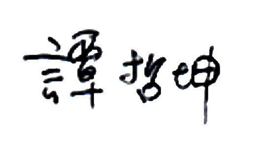

CEO인사말
한국 법인은 차별화된 제품력과 가격 경쟁력을 바탕으로 시장점유율을 대폭 확대할 예정입니다. 또한 커지고 있는 간편대용식 시장내 지배력을 강화하는 한편, 영양과 건강이 강조된 기능성 식품들도 다양하게 출시할 계획입니다. 지난해 말 R&D 전문가를 대표이사로 선임하고 현지인들을 영업·마케팅 부문 리더로 발탁해 제품을 중심으로 한 실행력 강화 기반을 마련한만큼, 제품과 영업 중심의 성장전략을 집중적으로 펼쳐나갈 것입니다. 해외 법인은 제과 외 사업확대를 가속화해 현지 1위 식품기업으로 도약하겠습니다. 러시아 법인은 러시아와 우크라이나 간 전쟁에 따른 불확실성이 커지고 있지만, 한·중·러 법인의 유기적인 협업으로 영향을 최소화할 방침입니다. 뜨베리주에 건설 중인 신공장 또한 목표했던 대로 상반기에 준공할 수 있도록 만반의 준비를 갖추고 있습니다. 신공장 완공 후 현지점유율을 확대하고, 중앙아시아와 유럽 등 신시장을 공략해 러시아 법인을 신성장 동력의 한 축으로 만들어가겠습니다.
닥터유 용암수와 바이오 사업 등 신규 프로젝트 성장 체제도 착실히 다져가겠습니다. 닥터유는 올해 건강기능식품인 ‘면역수’를 출시, 제품을 다양화 한만큼 한층 더 성장할 수 있을 것으로 기대하고 있습니다. 바이오 사업은 지난해 중국에 대장암 체외진단 제품의 대규모 설비 구축에 이어, 올해 결핵 백신 공동개발 계약을 체결했습니다. 특히 결핵백신 공동개발사업은 산둥성 중점 추진 프로젝트로 선정되어 추가 사업 동력도 확보했습니다. 원활히 진행될 수 있도록 제품 개발, 인허가 등 후속 절차에 만전을 기하고, 신규유망기술도 지속 발굴해가겠습니다.
쇼박스는 기존 영화 투자배급 중심에서 멀티 콘텐츠 창작 기업으로 전환됩니다. 최근 부상하고 있는 OTT 채널용 콘텐츠 제작을 확대하고, 신작 드라마 제작에도 나서며 변화의 한 해를 만들 것입니다. 함께 오리온의 경영철학이자 기업문화로 자리잡은 윤리경영의 수준을 높이겠습니다. 경쟁력있는 협력회사를 발굴, 지원하고 대리점들과도 상생협력하여 동반성장을 한층 강화하겠습니다. 또한 글로벌 탄소배출 통합관리를 본격적으로 실행하고 친환경 경영도 지속적으로 추구해가겠습니다.
올해도 오리온은 위기 속에서 기회를 찾고, 제품과 효율, 수익성을 중심으로 매출과 이익의 건강한 성장을 이어가며 글로벌 종합식품기업으로 도약할 수 있도록 최선을 다하겠습니다.오리온 그룹 회장
담철곤 